★HARDWARE Manual
★セガサターン概要マニュアル
★HARDWARE Manual
★セガサターン概要マニュアル
図3.12 VDP2システム構成
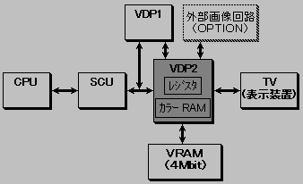
No | 項 目 | 仕 様 | 備 考 |
|---|---|---|---|
1 | TV画面 | ・水平方向解像度 | 垂直方向解像度256および512ピ |
2 | キャラクタ | ・キャラクタサイズ | ビットマップ方式も可能 |
3 | ノーマルスクロール面 | ・最大同時表示面数 4面 | |
4 | 回転スクロール面 | ・最大同時表示面数 2面 | 2面表示した場合、ノーマルスク |
5 | ウィンドウ | ・ノーマルウィンドウ 2面 | |
6 | プライオリティ | ・各画面のプライオリティをプログラマブルに指 | |
7 | 画面処理 | ・最大4画面までのカラー演算が可能 |
図3.13 スクロール、プライオリティ機能
スクロール機能 ────┬─ 拡大・縮小 ├─ ラインスクロール ├─ 縦セルスクロール ├─ モザイク処理 └─ ウィンドウ プライオリティ機能 ──┬─ カラー演算 ├─ カラーオフセット └─ シャドウ
機能 | ノーマルスクロール画面 | 回転スクロール画面 | ||||
|---|---|---|---|---|---|---|
画面０ | 画面１ | 画面２ | 画面３ | 画面０ | 画面１ | |
拡大縮小機能 | 1/4倍〜256倍 | なし | 任意の倍率で可能 | |||
回転機能 | なし | あり | ||||
ラインスクロール機能 | あり | あり | なし | なし | なし | |
縦セルスクロール機能 | あり | あり | なし | なし | なし | |
モザイク処理機能 | あり | あり(水平方向のみ) | ||||
ビットマップ表示 | 表示可能 | 表示可能 | 表示不可 | 表示不可 | 表示可能 | 表示不可 |
キャラクタ色数 | 16色 | 16色 | 16色 | 16色 | 16色 | 16色 |
図3.14 モザイクパターン
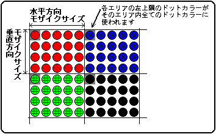
◆回転機能
図3.15 回転軸による画像変化
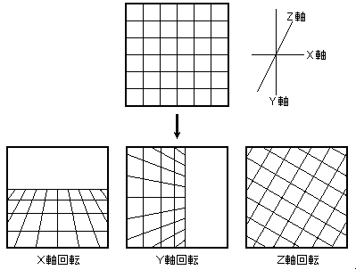
図3.16 画面軸による画像変化
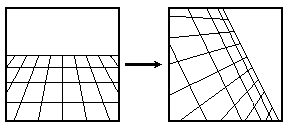
図3.17 セル形式のスクロール画面
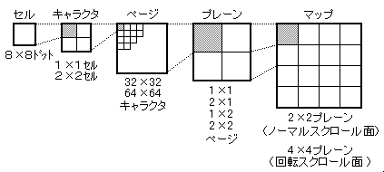
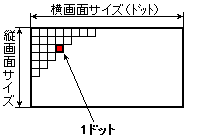
横 ５１２ドット×縦２５６ドット 横 ５１２ドット×縦５１２ドット 横１０２４ドット×縦２５６ドット 横１０２４ドット×縦５１２ドット
図3.19 ウィンドウ
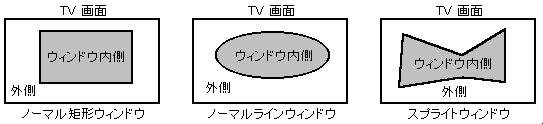
●プライオリティ機能
スプライトとスクロール画面の表示優先順位は、3ビットのプライオリティ
ナンバーによって決まります。スプライトのプライオリティナンバーは、
最大8つの値を設定することができ、そのうち1つをキャラクタ単位で指定します。
図3.20 プライオリティ機能
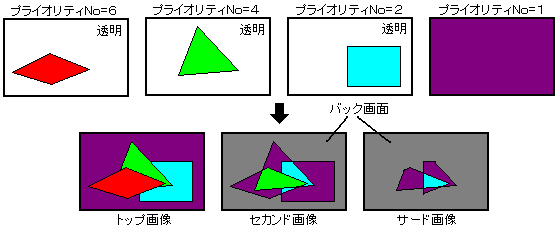
図3.21 カラー演算機能
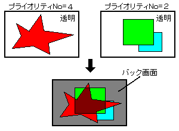
図3.22 ラインカラー画面の挿入
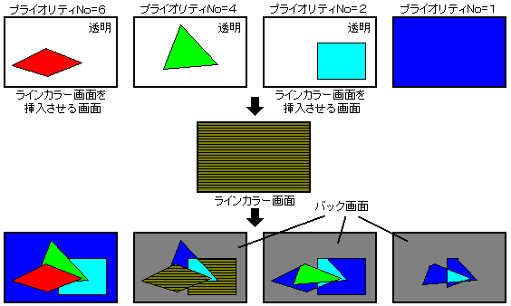
図3.24 ボカシ演算機能
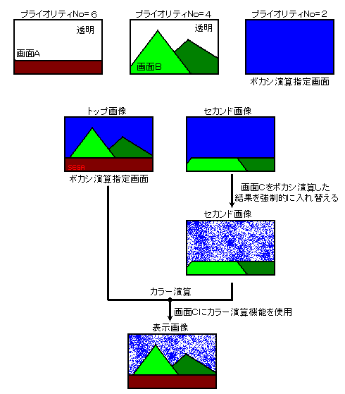
★HARDWARE Manual
★セガサターン概要マニュアル